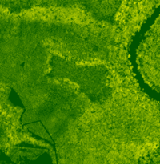

Current and future work
-
spatio-temporal interpolation
- getting the intermediate contours
- generating terrain from them
- relation of surface curvature to terrain temporal changes


Possible applications
-
analysis or model calibration
- evolving shorelines
- evolving islands
- disease spread
- fire spread
- glacier melting
-
terrain analysis
- computing rates of change
- computing rate of change of change
- terrain terrain interpolation
